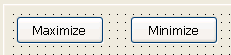

Often you need to exchange information between a window and a visual user object in the window. Consider these situations:
This section discusses two techniques for handling this communication and presents a simple example.
Communication with both techniques can be either synchronous (using Send for functions and the EVENT keyword for events) or asynchronous (using Post for functions and the POST keyword for events).
Instead of using functions or user events, it is possible to reference properties of a user object directly. If you have a user object control, uo_1, associated with a custom user object that has a SingleLineEdit, sle_1, you can use the following in a script for the window:
uo_1.sle_1.Text = "new text"
However, it is better to communicate with user objects through functions and user events, as described below, in order to maintain a clean interface between your user object and the rest of your application.
Exchanging information using functions is straightforward. After a user object calls a function, any return value is available to any control within that object.
For how to use this technique, see "Example 1: using functions ".
 To pass information from a window to a user object:
To pass information from a window to a user object:
Define a public, user object-level function that takes as arguments the information needed from the window.
Place the user object in the window.
When appropriate, call the function from a script in the window, passing the needed information as arguments.
 To pass information from a user object to a window:
To pass information from a user object to a window:
Define a public, window-level function that takes as parameters the information needed from the user object.
Place the user object in the window.
When appropriate, call the function from a script in the user object, passing the needed information as parameters.
You can define user-defined events, also called user events, to communicate between a window and a user object. You can declare user events for any PowerBuilder object or control.
A custom visual user object often requires a user event. After you place a custom visual user object in a window or in another custom user object, you can write scripts only for events that occur in the user object itself. You cannot write scripts for events in the controls in the user object.
You can, however, define user events for the user object, and trigger those events in scripts for the controls contained in that user object. In the Window painter, you write scripts for the user events, referencing components of the window as needed.
For more information about user events, see Chapter 9, "Working with User Events ," and Application Techniques . For instructions for using this technique, see "Example 2: using user events ".
 To define and trigger a user event in a visual
user object:
To define and trigger a user event in a visual
user object:
In the User Object painter, select the user object.
Make sure no control in the user object is selected.
In the Event List view, select Add from the pop-up menu.
In the Prototype window that displays, define the user event.
For how to do so, see "Defining user events ".
Use the Event keyword in scripts for a control to trigger the user event in the user object:
userobject.Event eventname ( )
For example, the following statement in the Clicked event of a CommandButton contained in a custom visual user object triggers the Max_requested event in the user object:
Parent.Event Max_requested()
This statement uses the pronoun Parent, referring to the custom visual user object itself, to trigger the Max_requested event in that user object.
Implement these user events in the Window painter.
 To implement the user event in the window:
To implement the user event in the window:
Open the window.
In the Window painter, select Insert>Control from the menu bar and place the custom visual user object in the window.
Double-click the user object and then in the Script view, write scripts for the user events you defined in the User Object painter.
To illustrate these techniques, consider a simple custom visual user object, uo_minmax, that contains two buttons, Maximize and Minimize.

If the user clicks the Maximize button in an application window containing this user object, the current window becomes maximized. If the user clicks Minimize, the window closes to an icon.
Because the user object can be associated with any window, the scripts for the buttons cannot reference the window that has the user object. The user object must get the name of the window so that the buttons can reference the window.
"Example 1: using functions " shows how PowerBuilder uses functions to pass a window name to a user object, allowing controls in the user object to affect the window the user object is in.
"Example 2: using user events " shows how PowerBuilder uses unmapped user events to allow controls in a user object to affect the window the user object is in.
window mywin
mywin = win_param
uo_func.f_setwin(This)
What happens When the window opens, it calls the user object-level function f_setwin, which passes the window name to the user object. The user object stores the name in its instance variable mywin. When the user clicks a button control in the user object, the control references the window through mywin.
What happens When a user clicks a button, the Clicked event script for that button triggers a user event in its parent, the user object. The user object script for that event modifies its parent, the window.
This part describes how to use PowerBuilder to manage your database and how to use the Data Pipeline painter to copy data from one database to another.